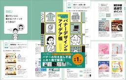
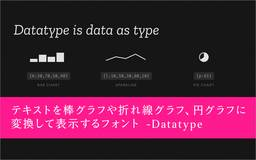

コリス
https://coliss.com
Web制作に関する最新の情報をご紹介
フィード

ミニマルなデザインで使いやすい！ シンプルなHTMLでさまざまなUIコンポーネントを実装できる超軽量ライブラリ -Oat UI 30
30
コリス
セマンティックなHTMLで、Webサイトやスマホアプリでよく使用されるさまざまなUIコンポーネントや要素を実装できる超軽量UIライブラリを紹介します。 デザインはシンプルでミニマル！ 依存関係は一切なく、classレスと […]
6時間前

小さなバナーに潜むデザインのさまざまなアイデアとテクニックが詳しく解説されたデザイン書 -バナーデザインのアイデア帳 4
コリス
※本ページは、アフィリエイト広告を利用しています。 デザインで役立つのは、良質なデザインの引き出し持っておくこと。バナーのデザインはもちろん、Web制作に携わるすべての人にお勧めのデザイン書を紹介します。 本書は本日、3 […]
4日前
これは絶対見逃したらダメ！ 1Password値上げ前の最後となるセールがソースネクストで開催 3
コリス
※本ページは、アフィリエイト広告を利用しています。 1Passwordが、ついに3/27から値上げされるとのことです。この値上げ前の最後となるセールがソースネクストで開催しています！ 1Passwordの公式サイトで購入 […]
5日前
これは覚えておきたい！ シンプルなCSSで、画像をホバーすると拡大し、マスクまでしてくれる 24
コリス
画像をホバーすると拡大するCSSのテクニックは昔からありますが、画像の拡大分をoverflow:hidden;で非表示にするのではなく、clip-pathでクリッピングするとってもシンプルなCSSを紹介します。 実際の動 […]
6日前

ちょっと面白いフォントがGoogle Fontsで使える！ テキストを棒グラフや折れ線グラフ、円グラフに変換して表示できるフォント -Datatype 47
コリス
テキストを棒グラフや折れ線グラフ、円グラフに変換して表示するフォントがGoogle Fontsで利用できるようになったので紹介します。 たとえば、{b:15,45,80,30,60}というテキストは5つのバーがある棒グラ […]
7日前

これはかなりおすすめ！ Reactを使えるようなりたい人に、入門書の決定版 -挫折しないReactの教科書
コリス
※本ページは、アフィリエイト広告を利用しています。 Reactを使ってみたいけど、どこから始めればよいのか。そんな人にお勧めの挫折せずにReactを学ぶことができる解説書を紹介します。 書名にもあるように『挫折しない』こ […]
10日前
Web制作者は要チェック！ スマホでもテキストサイズの拡大縮小ができるようになるなど、Chrome 146で新しく追加された5個のCSSの機能
コリス
3/11にアップデートされたChrome 146に追加された、CSSとUIに関する新しい機能を紹介します。 今回のアップデートで注目すべきは、スクロールの位置に基づいてアニメーションを制御する機能、meta name=t […]
11日前
これでSVGアイコンを探すときに困らない！ 無料で商用利用できるライブラリを横断検索できる便利サイト -All SVG Icons
コリス
SVGアイコン、特に無料で利用できるオープンソースのSVGアイコンをまとめて検索・閲覧できる便利なサイトを紹介します。 さまざまなSVGアイコンのライブラリを横断検索することもでき、好みのデザインを見つけて、SVGアイコ […]
12日前
シンプルだから使いやすい！ ページの途中で上方向にスクロールするとヘッダを上部から表示する超軽量スクリプト -Peek
コリス
ユーザーが下方向にスクロールするとヘッダを自動的に非表示にし、ページの途中で上方向にスクロールするとヘッダを表示する、超軽量のスクリプトを紹介します。 実装は非常に簡単で、カスタマイズも簡単、既存のWebページに導入する […]
13日前
Amazonの新生活セールは本日（3/9）が最終日！ 見逃しがちなお買い得品を紹介します
コリス
※本ページは、アフィリエイト広告を利用しています。 Amazonのビッグセール「新生活セール」は、いよいよ本日3/9が最終日！ このセールでは特に生活用品が数多く対象になっており、通常のセールよりもかなり安くなって、非常 […]
14日前